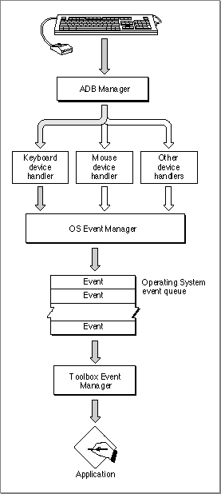
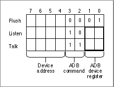
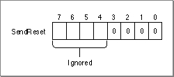
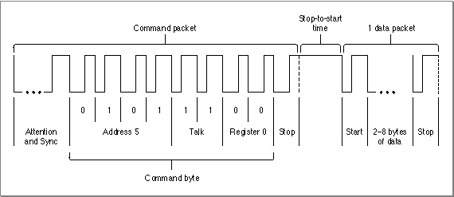
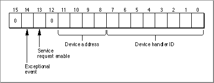
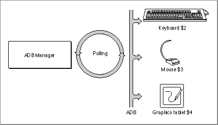
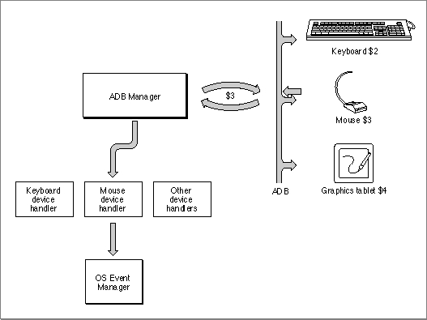
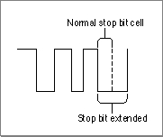
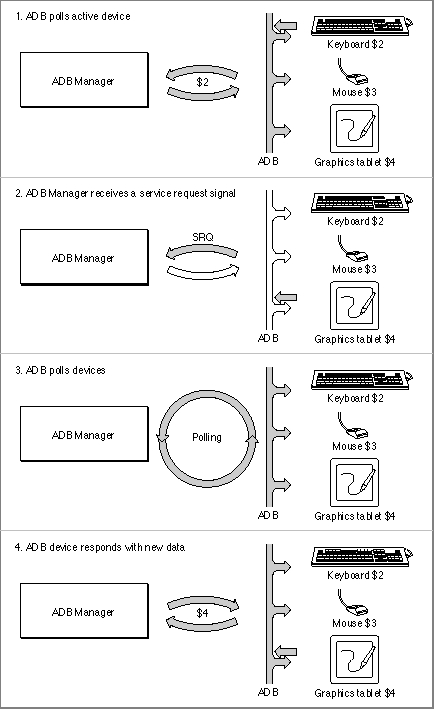

About the ADB Manager
The ADB Manager is the part of the Macintosh Operating System that allows you to get information about and communicate with hardware devices attached to the Apple Desktop Bus. Most applications never need to interact with the ADB Manager, but can instead call the appropriate Event Manager routines for information about user actions on ADB devices such as keyboards or mouse devices. Also note that the ADB Manager does not interact with the Device Manager, but handles all ADB devices and ADB device handlers itself.The ADB Manager handles three main tasks. First, at system startup, the ADB Manager builds the ADB device table, which contains the default ADB device address, device handler ID, and other identifying information for each ADB device. Whenever the ADB is reinitialized, the ADB Manager reinitializes the ADB device table. Second, if two or more ADB devices share the same default ADB device address when the ADB is building the ADB device table or when the ADB is reinitialized, the ADB Manager assigns each device a new ADB device address until no address conflict exists. This process is known as address resolution (see page 5-15 for more information). Third, the ADB Manager retrieves new data from the ADB devices and sends it to the appropriate device handler.
In general, ADB devices communicate with the Operating System only through the ADB Manager. The ADB Manager, in turn, calls a device handler to process data from the device. The device handler interprets data transmitted by the ADB device, and in some cases, passes this information to the Event Manager. A single device handler can manage more than one device of the same type (for example, the device handler for the Apple Extended keyboard can manage several keyboards). A single device handler can also manage more than one device type if the different device type emulates the device type associated with the particular device handler (for example, a mouse device handler can manage both a mouse and a graphics tablet emulating a mouse).
A device handler receives all data from its associated ADB device through the ADB Manager. The ADB Manager continually checks to see if ADB devices have new data to send. When the ADB Manager receives new data from an ADB device, it sends the data to the appropriate device handler. The device handler interprets the data and, if appropriate, places an event into the event queue using the
PostEventfunction. (For more information onPostEvent, see Inside Macintosh: Macintosh Toolbox Essentials) For example, if the user types a key on the keyboard, the ADB Manager retrieves this data and sends the data to the device handler for the keyboard, which in turn places an event into the event queue. Figure 5-1 shows the relationship between the ADB Manager, device handlers, and the Event Manager.Figure 5-1 The ADB Manager and device handlers

The ADB Manager retrieves data from an ADB device as a result of its normal polling process. The ADB Manager polls a device by sending it a command requesting it to return the contents of one of its registers. (Note that an ADB device should respond to the specific ADB command, Talk Register 0, only if the device has new data to send. See the next section, "ADB Commands," for more information.)
In general, the ADB Manager repeatedly polls the last ADB device that sent new data except under two circumstances: when it receives a service request signal, and when it builds the ADB device table. In these cases, the ADB Manager also polls other ADB devices. When responding to a service request signal, the ADB Manager polls all known addresses containing an ADB device until all pending data is transmitted and no device asserts a service request signal. When building the ADB device table, the ADB Manager polls each ADB device connected to the bus. For more information on the ADB device table, see "ADB Device Table" on page 5-13.
In general, only device handlers use the ADB Manager to communicate with devices. The normal polling of ADB devices performed by the ADB Manager retrieves data for the device handlers; your application should call the appropriate Event Manager routines for information about the user's input on ADB devices. If necessary, however, you can directly communicate with an ADB device using the
ADBOproutine. You should use theADBOproutine only for special purposes where you need to directly communicate with an ADB device (for example, to set the LED lights on an Apple Extended keyboard). Remember that in most circumstances, you do not need to callADBOp.ADB Commands
An ADB command is a 1-byte value that specifies the ADB device address of a device and encodes the desired action the target device should perform. In some cases, additional data may follow an ADB command. For example, the ADB Manager may transmit data to the device or the device may respond to a command by transmitting one or more bytes of data back to the ADB Manager. It's important to realize, however, that ADB devices never issue commands to the ADB Manager. At most, the device can assert a service request signal to request that the ADB Manager poll the bus for any devices wishing to transmit data. For more information on how ADB devices communicate with the ADB Manager, see "ADB Communication,"beginning on page page 5-17.The ADB Manager can send any of four bus commands to an ADB device. Three of these commands, Talk, Listen, and Flush, are addressed to specific registers on a specific device. For more information on these registers, see "ADB Device Registers" on page 5-9. The fourth command, SendReset, applies to all ADB devices.
Figure 5-2 shows the command formats for the Talk, Listen, and Flush commands.
- Talk. The ADB Manager sends a Talk command to a device to fetch user input (or other data) from the device. The Talk command requests that a specified device send the contents of a specified device register across the bus. After the device sends the data from the specified register, the ADB Manager places the data into a buffer in RAM, which the ADB Manager makes available for use by device handlers or (in rare cases) applications. In the case of a Talk Register 0 command, the ADB device should respond to the ADB Manager only if it has new data to send.
- Listen. The ADB Manager sends a Listen command to a device to instruct it to prepare to receive additional data. The Listen command indicates which data register is to receive the data. After sending a Listen command, the ADB Manager then transfers data from a buffer in RAM to the device. The device must overwrite the existing contents of the specified register with the new data.
- Flush. The ADB Manager sends a Flush command to a device to force it to flush any existing user-input data from a specified device register. The device should prepare itself to receive any further input from the user.
- SendReset. The ADB Manager uses a SendReset command to force all devices on the bus to reset themselves to their startup states. Each device should clear any of its pending device actions and prepare to accept new ADB commands and user input data immediately. Note that the ADB device does not actually receive the SendReset command but recognizes that it should reset itself when the bus is driven low by the 3 millisecond reset pulse. Your application should never send the SendReset command.
Figure 5-2 Command formats for Talk, Listen, and Flush

Bits 0 through 1 specify the ADB device register, bits 2 through 3 specify the command code, and bits 4 through 7 specify the device address.
Figure 5-3 shows the command format for the SendReset command.
Figure 5-3 Command format for SendReset

The first four bits of the SendReset command identify this command. Because the SendReset command applies to all ADB devices, bits 4 through 7 do not specify the address of a particular device. As previously described, an ADB device never receives a SendReset command; instead, the device resets itself in response to the 3 millisecond pulse.
ADB Transactions
An ADB transaction is a bus communication between the computer and an ADB device. A transaction consists of a command sent by the computer, followed by a data packet of several bytes sent either by the computer or a device. An ADB command consists of four parts:Figure 5-4 shows a typical ADB transaction, consisting of a command followed by a data packet.
- an Attention signal
- a Sync signal
- one command byte
- one stop bit
Figure 5-4 A typical ADB transaction

ADB Device Registers
Each device connected to the Apple Desktop Bus may provide up to four registers for storing data. These registers are referred to as ADB device registers. An ADB device can implement these registers as it chooses; that is, an ADB register does not have to correspond to an actual hardware register on the ADB device. An ADB device is accessed over the ADB by reading from or writing to these registers. Each ADB device register may store between 2 and 8 bytes of data.The ADB device registers are numbered 0 through 3. Register 0 and register 3 are defined according to the specifications described in the next two sections. Register 1 and register 2 are device-dependent and can be defined by a device for any purpose.
Register 0
For most devices, register 0 is used to hold data that needs to be fetched by the Macintosh Operating System. For example, register 0 of the Apple Standard keyboard contains information about the key pressed by the user.The ADB Manager polls all ADB devices to determine which one asserted a service request signal by sending a Talk Register 0 command to each device in turn. A device should respond to a Talk Register 0 command only if it has new data to send. For more information about polling, see "ADB Communication," beginning on page 5-17.
Table 5-1 shows the bits of register 0 as defined by the Apple Standard keyboard. Note that these bits represent key transition codes (also called raw key codes). For examples of the bits of register 0 used for the Apple standard mouse and the Apple Extended keyboard, see Guide to the Macintosh Family Hardware, second edition.
Register 3
The bits in register 3 are defined by the ADB Manager. Figure 5-5 shows the defined bits for register 3, which include the default ADB device address, the device handler ID, a service request enable field, an exceptional event field, and several reserved bits.Figure 5-5 Format of device register 3

Table 5-2 provides a description of each bit in register 3.
The functions of some of the bits in register 3 are discussed in detail in this chapter. For information on service request signals, "ADB Communication," beginning on page 5-17. For information on the default ADB device address and device handler ID, see the next section.
Default ADB Device Address and Device Handler Identification
As previously described, each ADB device has a default ADB device address and device handler identification (or device handler ID). Together, the default ADB device address and device handler ID identify the general type of device (such as a mouse or keyboard) as well as a more specific classification of the device type (such as the Apple Extended keyboard) or specific mode of operation (such as whether the keyboard differentiates between the Right and Left Shift keys).A default ADB device address is a 4-bit bus address that uniquely identifies devices of the same type. The currently defined default ADB device addresses have values between 1 and 7. Table 5-3 shows the defined default ADB device addresses and their device type categories. Though it is not mandatory that an ADB device's default address define the device type, doing so significantly reduces the possibility of multiple devices on the ADB sharing the same default address. Most device default addresses are movable addresses, which means that they can be replaced with a new address. If two ADB devices have the same default address, the ADB Manager must move one of the devices to a new address. An example of this process is described in detail in "Address Resolution," beginning on page 5-15.
The ADB device handler ID is an 8-bit value that further identifies the specific device type or its mode of operation. For example, an Apple Standard keyboard has a device handler ID of 1, while an Apple Extended keyboard has a device handler ID of 2.
- Note
- The default address $0 is reserved for the Macintosh computer. Addresses $8 through $E are reserved by the ADB Manager for dynamically relocating devices to resolve address collision.

An ADB device can support several device handler IDs and change its mode of operation according to its current device handler ID. The Apple Extended keyboard, for example, supports two device handler IDs: $02 and $03. The Apple Extended keyboard uses $02 as a device handler ID by default. When its device handler ID is changed to $03, the Apple Extended keyboard sends separate key codes for the Left and Right Shift keys. A device handler, application, or the ADB Manager can request a device to change its device handler ID by sending it a Listen Register 3 command. If a device accepts a new device handler ID, it sends that device handler ID in response to any subsequent Listen Register 3 command. An ADB device should respond to a request to change its device handler ID only if it recognizes the device handler ID; otherwise, it should ignore the request and continue to send its default device handler ID in response to a Listen Register 3 command. For example, if the Apple Extended keyboard is requested to change its device handler ID to $52, the keyboard ignores this request. When an ADB device handler changes its device handler ID anytime after the ADB Manager sets initial values for that device in the ADB device table (that is, after initial address resolution is complete), the ADB Manager does not update the device's entry in the ADB device table.
Apple reserves certain device handler IDs for special purposes, as shown in Table 5-4. ADB devices must recognize and respond appropriately to these special device handler IDs. When a device receives a Listen Register 3 command containing a special device handler ID, the device should immediately perform the specified action. Note, however, that the device should not change its device handler ID to the special device handler ID specified by the Listen Register 3 command.
- Note
- The special device handler ID $00 can also be returned by a device that fails a self-test.
ADB Device Table
The ADB Manager creates the ADB device table and places it in the system heap during system startup. The ADB Manager also reinitializes the ADB device table whenever the ADB is reinitialized (as a result of a call to theADBReinitprocedure, for example). For each ADB device, the ADB device table contains an ADB device table entry. The device table entry specifies the device's handler ID, default ADB device address and current ADB address, as well as the address of the device handler and the address of the area in RAM used for global storage by the handler. For information on the address ADB device and device handler ID, see "Default ADB Device Address and Device Handler Identification" on page 5-11. For information on device handlers, see "Writing an ADB Device Handler" on page 5-29.Once the ADB Manager has set the initial values for an ADB device in the ADB device table, thereafter it updates the device table entry only to reflect changes to a device's device handler routine and data area pointer. If an ADB device changes its device handler ID, the ADB Manager does not update the ADB device table to reflect this change. To find out the new device handler ID for a device, you must send the device a Talk Register 3 command.
The ADB device table is accessible only through the ADB Manager routines
GetIndADB,GetADBInfo, andSetADBInfo. TheGetIndADBandGetADBInforoutines return information from the device table in an ADB data block, defined by theADBDataBlockdata type. These routines are described in detail later in this chapter.At system startup, the ADB Manager sends a Talk Register 3 command to each device to retrieve its default ADB device address and device handler ID. For an Apple ADB device, the ADB Manager immediately places in the device table the address of the appropriate device handler provided by Apple for that device. Each nonstandard device, however, requires its own handler installation code to place the address of its device handler in the table. For information on installing a device handler, see "Installing an ADB Device Handler,"beginning on page 5-30.
If more than one ADB device has the same default ADB device address, the ADB Manager performs address resolution. For more information, see "Address Resolution," beginning on page 5-15.
Table 5-5 shows an example of an ADB device table after all ADB devices have responded to polling and have been assigned unique ADB device addresses by the ADB Manager. This example shows just one way that address resolution might occur.
The leftmost column shows the device table index. In this example, four devices are connected to the ADB: three keyboards and a mouse. The keyboard at index $1 has a device handler ID of $01, specifying that it is an Apple Standard keyboard. The remaining two keyboards at index $3 and index $4 each have a device handler ID of $02, specifying that they are both Apple Extended keyboards. Because they are the same type of device, all three keyboards have a default ADB device address of $2. Each ADB device must have a unique ADB device address. The ADB Manager therefore performs address resolution by assigning each Apple Extended keyboard a new and unoccupied ADB address. See "Address Resolution," beginning on page 5-15, for complete details on address resolution.
Although the ADB Manager assigns each keyboard a unique current address, note that all three keyboards use the same device handler, which in this example is located at address $4080AB46. The device handler, however, stores data for the two keyboard types in different areas in RAM. In this example, the address of the data area for the two Apple Extended keyboards is at $548C, compared to the address of the data area for the Apple Standard keyboard located at $5450.
In contrast, the mouse at index $2 is the only ADB device of its type and therefore has the same default and current address. Also, the mouse uses a different device handler than the keyboards use, which in this example is located at address $4080AAE6. Finally, the mouse device handler does not need to use area in RAM for storage. As a result, the value for its data area is $0000.
Address Resolution
Each ADB device has a default ADB device address and initially responds to all ADB commands at that address. If two or more ADB devices respond to commands sent to a particular address, this is referred to as address collision. Due to the design of ADB devices and the ability of the ADB Manager to perform address resolution, most address collision occurs only at initial startup or when you reset the ADB. Furthermore, once the ADB Manager reassigns those addresses in conflict, subsequent address collision is quite rare.Collision detection is the ability of an ADB device to detect that another ADB device is transmitting data at the same time. An ADB device should be able to detect a bus collision if it is bringing the bus high when another device is bringing the bus low. Whenever an ADB device attempts to bring the bus high, it should verify whether the bus actually goes high. If the bus instead goes low, this indicates that another device is also trying to send data. The device detecting the collision must immediately stop transmitting and save the data it was sending. Because the detecting device is no longer transmitting data, the device driving the bus low is not able to detect the other device. As a result, only one of the two colliding devices--the device driving the bus high--actually detects the collision.
When the ADB Manager performs address resolution, it reassigns default ADB device addresses so that all devices have a unique address. The new address locations are always between $8 through $E. Because these locations are dynamic, there is no way to predict the order in which the ADB Manager assigns new addresses to ADB devices or the exact address that it assigns to a given device. For the ADB Manager to accomplish address resolution, an ADB device must meet two design requirements: first, it must have collision detection, and second, it must always respond to a Talk Register 3 command by returning a random device address in bits 8 through 11.
A random device address is a four-bit value; an ADB device must return a random device address to the ADB Manager in response to a Talk Register 3 command. An ADB device is designed to respond only to a Talk Register 3 command that is specifically addressed to it. Because the address of an ADB device is already confirmed by its ability to respond to the Talk Register 3 command, the device does not need to provide its ADB device address to identify itself. The ability of devices to send random addresses plays a crucial role in collision detection.
At system startup, the ADB Manager polls all ADB devices at each ADB address and begins the process of building the ADB device table by sending a Talk Register 3 command to each device. Each ADB device at a specific address attempts to respond by sending a random device address. If more than one ADB device shares an address, however, each device that detects a collision immediately stops transmitting data. The device that has not detected the collision completes sending its random address across the bus.
In response, the ADB Manager sends to the original address a Listen Register 3 command that contains a new ADB device address and a device handler ID of $FE. A new ADB device address is always a value between $8 and $E. A device handler ID of $FE instructs a device to change to the new device address only if it does not detect a collision. Any detecting devices will therefore ignore the next Listen Register 3 command containing a new ADB device address. As a result, only the device that did not detect the collision moves to the new address; the detecting devices remain at the original address. The ADB Manager now sends another Talk Register 3 command to the new address to verify that the device moved to that location. In response, the moved device must once again return a random address.
The ADB Manager repeats this process until it receives no response when it sends a Talk Register 3 command to the shared address. This indicates that no devices reside at the address and that it is an available address location for a device. The ADB Manager then moves the first device it relocated to a new address back to its original address.
Figure 5-6 shows three keyboards, a mouse, and a graphics tablet. In this example, assume these ADB devices are all connected to an ADB. This example describes one possible order and method that the ADB Manager might use to relocate ADB devices. Remember, however, that the specific implementation of address resolution is private to the ADB Manager.
Figure 5-6 Resolving address conflicts
In the example shown in Figure 5-6, all three keyboards are the same device type; thus, they share the same default ADB device address ($2). When the ADB Manager begins to build the device table by sending a Talk Register 3 command to address $2, all three keyboards attempt to respond and address collision occurs. The ADB Manager then begins the process of address resolution.
In this particular example, the ADB Manager first sends a Listen Register 3 command that specifies a device handler ID of $FE and a new device address of $E to the ADB device at address $2. Only the keyboard that did not detect the collision responds to this command and moves to address $E. Next, the ADB Manager sends a Talk Register 3 command to address $E to confirm that the keyboard has relocated there. Once the relocated keyboard responds with a random address, the ADB Manager again sends a Talk Register 3 command to address $2. Because two keyboards still remain at address $2, address collision occurs again. The ADB Manager therefore sends a Listen Register 3 command that specifies a device handler ID of $FE and a new device address of $D to the ADB device at address $2. Only the keyboard that did not detect the collision moves to address $D. There is now only one keyboard remaining at address $2. When the ADB Manager sends another Talk Register 3 command to address $2, the single keyboard does not detect a collision. It therefore accepts the next Listen Register 3 command from the ADB Manager that tells it to move to a new address ($C). Once more, the ADB Manager sends a Talk Register 3 command to address $2. When it receives no response from any devices, the ADB Manager moves the keyboard relocated to address $E back to address $2.
In contrast, the mouse and the graphics tablet are the only devices of their type connected to the ADB. As a result, neither device shares a default address with another device; the mouse is located at address $3 and the graphics tablet is located at address $4. When the ADB Manager builds the device table, no address collision occurs for either device and they remain at their original addresses.
For more information on the ADB device table, see "ADB Device Table" on page 5-13.
ADB Communication
ADB devices cannot issue commands to the ADB Manager. Communication is accomplished in two ways. First, the ADB Manager performs polling of the ADB devices, and second, each ADB device can assert a service request signal to inform the ADB Manager that it has data to send. The ADB Manager passes the data sent by each ADB device to the associated device handler. In general, the ADB Manager continuously polls the active ADB device, which is the last device that sent new data after requesting service with a service request signal. The default active device is located at address $3, which is usually the mouse.Polling (or autopolling) is accomplished by the ADB Manager repeatedly sending Talk Register 0 commands to an ADB device to see if it has new data to return. Register 0 is therefore the primary register for transferring data for all ADB devices. For an example of the register 0 contents for the Apple Standard keyboard, see Table 5-1 on page 5-10.
Figure 5-7 shows three ADB devices connected to the bus (a keyboard, a mouse, and a graphics tablet) and the ADB Manager performing polling.
- Note
- If the data that is significant to the ADB device resides in an ADB register other than register 0, the device handler must directly retrieve the data from that register. For example, the Apple Extended keyboard contains data in both register 0 and register 2. The keyboard device handler must therefore directly retrieve the register 2 contents.

An ADB device should respond to a Talk Register 0 command only if it has new data to send to the ADB Manager; that is, if the status of the device has changed since the last Talk Register 0 command. For example, Figure 5-8 shows a situation where the mouse is the active device. The ADB Manager polls the mouse, sending a Talk Register 0 command. If the mouse has new data to send, it should respond. Whenever the mouse responds with new data to a Talk Register 0 command, the ADB Manager sends this new data to the mouse handler, which uses the
PostEventfunction to place an event in the event queue.Figure 5-8 How an ADB device responds to a polling request by the ADB Manager

If a Talk Register 0 command is completing, the ADB device should assert a special signal, known as a service request signal (or SRQ), to inform the ADB Manager that it has data to send. As shown in Figure 5-9, an ADB device asserts an SRQ by holding the bus low during the low portion of the stop bit of any command or data transaction.
- Note
- Designing an ADB device to respond to a Talk Register 0 command only if it has new data to send can significantly optimize the performance of the Apple Desktop Bus. It reduces the effort required by the ADB Manager because it only has to call the device handler associated with a device when the device has actual data to send. It also avoids the endless polling cycles by the ADB Manager that can occur when an ADB device responds to a Talk Register 0 command with no new data. In an endless polling cycle, the ADB Manager continues to repeatedly poll the device not sending new data, rather than moving to the next ADB device that may have new data to send.
- For further optimization, the ADB Manager automatically polls only those ADB devices that have an installed device handler. If an ADB device does not have a device handler installed, the ADB Manager skips that device during polling and instead polls an ADB device that has an installed device handler, even if the other device has not recently communicated with the ADB Manager. The ADB Manager may poll an ADB device that does not have an installed device handler, however, in response to a service request signal.
Figure 5-9 The ADB service request signal

For information on the timing parameters for ADB signals, see Guide to the Macintosh Family Hardware, second edition.
To identify which device asserted the SRQ, the ADB Manager polls each address known to contain an ADB device, beginning with the active ADB device. That is, if the first device polled by the ADB Manager does not respond to the Talk Register 0 command, it polls the next device. When the ADB Manager polls the device that asserted the SRQ, that device responds with new data. If another device asserts an SRQ, the ADB Manager continues polling until it finds that device. If no SRQ is asserted, this indicates that all pending data has been fetched and that the ADB Manager can return to polling the active device. For example, Figure 5-10 shows three ADB devices, with the ADB Manager polling the active ADB device. One of the three ADB devices, a graphics tablet, sends an SRQ to the ADB Manager. In this particular example, the ADB Manager responds by polling the active ADB device (in this case, the keyboard) and then polling the remaining ADB devices. After receiving a Talk Register 0 command from the ADB Manager, the graphics tablet can send its new data.
Figure 5-10 An ADB device asserts the service request signal
